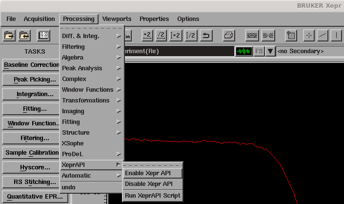

Run an optimisation¶
Procedure¶
- In Xepr:
Set up your experiment as you would normally do.
- Enable XeprAPI (Processing → XeprAPI → enable XeprAPI).
- 
Run your experiment once by clicking on play to load it into XeprAPI (can also be done before enabling XeprAPI).
{kind=link}
Run your optimisation script in a terminal with
python yourscript.py
(replace python with python3 if necessary)
- At each iteration, esrpoise:
adjusts the parameters to be optimised
runs the experiment
computes the cost function.
Once optimise() is done, you get a set of optimised parameters. These are set up in Xepr but your experiment is not run. You need to run it if you want to have the optimised result loaded in Xepr.
Running tips¶
You can interupt the optimisation with
ctrl+C. It is recommend to do so while a measurement is running.When using .exp and .def file, save them beforehand to avoid getting a warning. Otherwise this warning pauses the optimisation and you need to manually get rid of it at each iteration.
When running your experiment once to load it in XeprAPI, you can interupt it by clicking on play again. This is enough to set it up, sparing the time of a full run.